CivHub is an open-source platform for mapping governance data, providing transparent insights, and building a decentralized model for civic engagement.
We are in early development—having started with a focus on New York and Westchester-area data, and expanding into national insights to map patterns across housing, labor, environment, and governance. More localities to follow.
Insight 011 – April 6, 2025
Over 13 million housing units in the U.S. are currently vacant, comprising more than 10% of the national housing stock. As housing crises intensify, this figure underscores the need to scrutinize not just supply, but access and distribution.
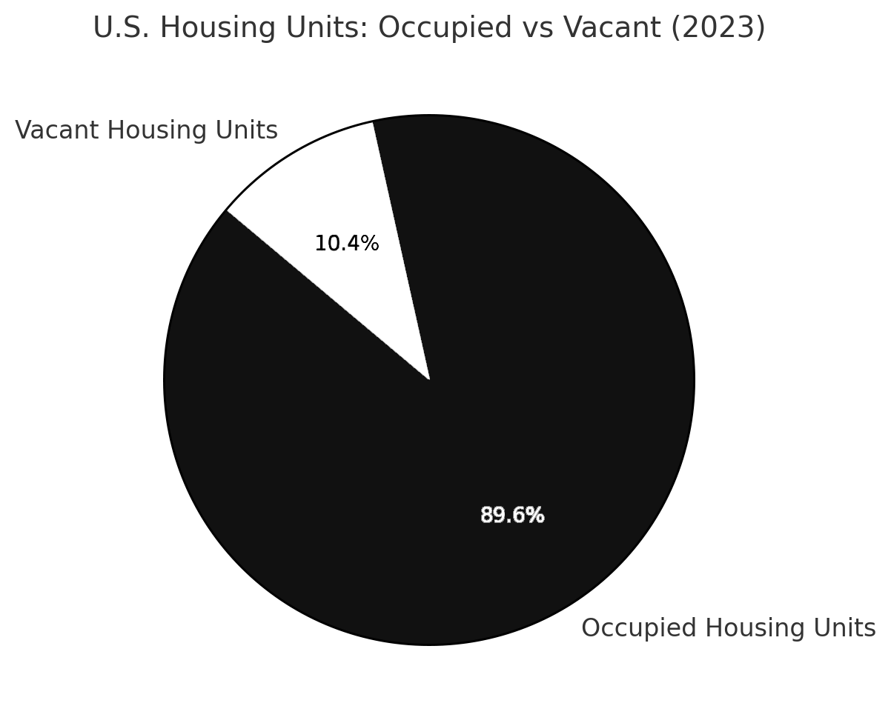 Generated by CivHub AI v0.1Source: U.S. Census Bureau | Data: ACS DP04 CSV
Insight 010 – April 6, 2025
Despite a civilian labor force of over 171 million, more than 98 million Americans aged 16+ are not in the labor force—a significant portion of the population that’s neither employed nor actively seeking work.
This discrepancy invites deeper questions about the structure of our economy, barriers to employment, and who gets counted when we talk about the “working” population.
Source: U.S. Census Bureau | Data: ACS Income & Employment CSV
Insight 009 – April 6, 2025
According to the latest ACS 2023 data, just over 10% of U.S. housing units are vacant, with over 60% of occupied homes being detached single-family structures. Homeowner vacancy is low at 1%, while rental units show a 5.5% vacancy rate—offering a quick glimpse into national housing availability and structure type.
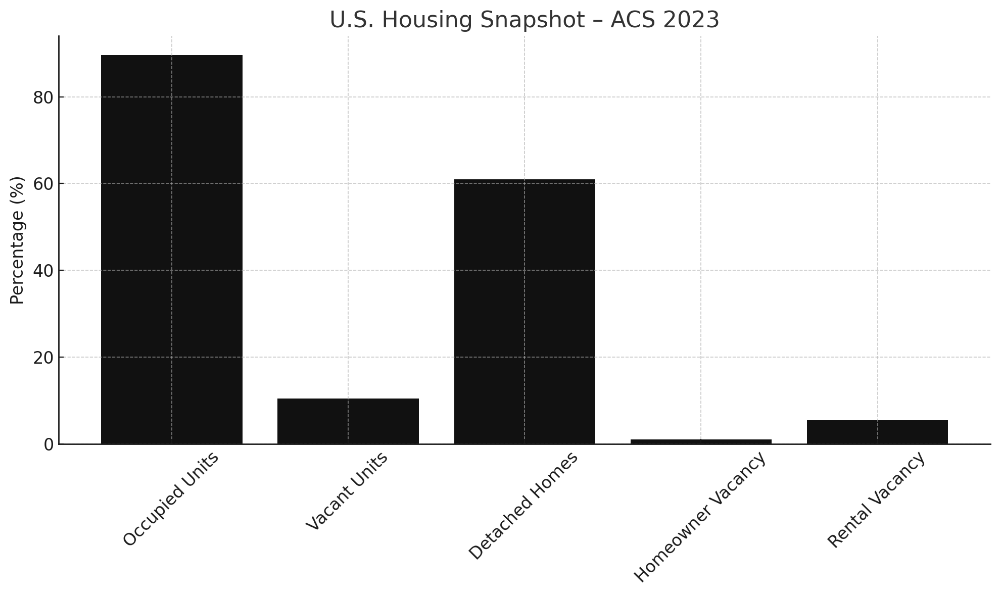 Generated by CivHub AI v0.1Source: U.S. Census Bureau | Data: ACS 2023 Housing CSV
Meta Insight 002 – March 29, 2025
Some of New York's most populous counties also host the largest number of EPA-monitored facilities. This clustering suggests that environmental oversight efforts are concentrated in high-density urban areas—an important overlap when considering environmental justice policy.
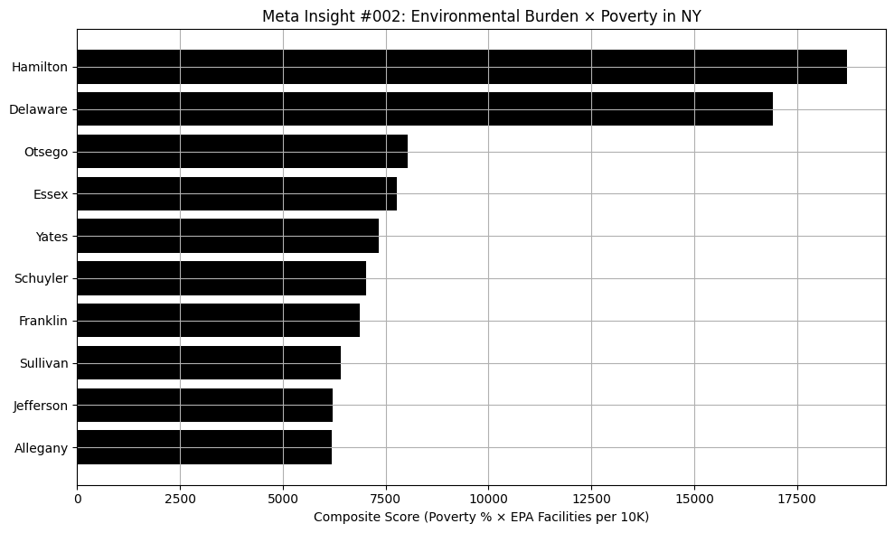 Generated by CivHub AI v0.1Sources: U.S. Census Bureau, EPA FRS | Data: EPA CSV, Census CSV
Meta Insight 001 – March 28, 2025
Counties with more environmental facilities also tend to have higher poverty rates. This pattern raises environmental justice concerns, suggesting that lower-income communities may bear a disproportionate regulatory or environmental burden.
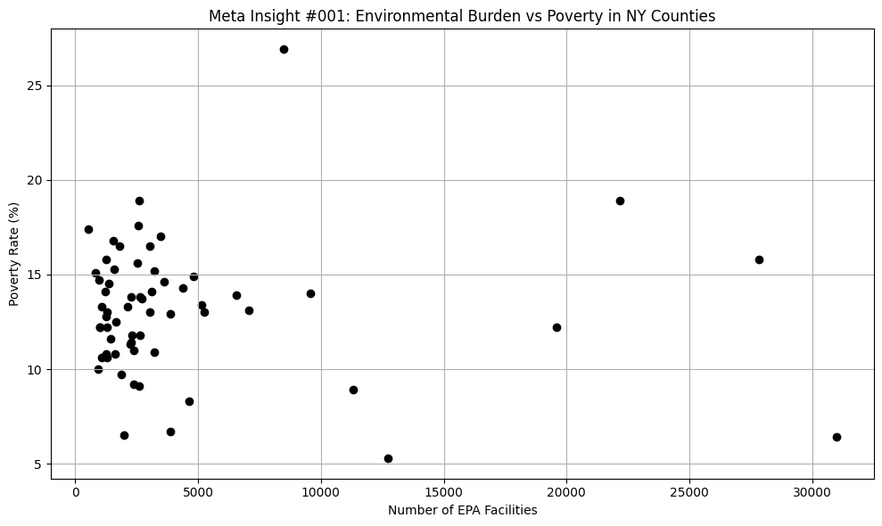 Generated by CivHub AI v0.1Sources: U.S. Census Bureau, EPA FRS | Data: EPA CSV, Census CSV
Insight 008 – March 29, 2025
The New York State Budget for 2024–25 shows a significant reduction in funding for Worker Protection and Public Safety. These functions saw the sharpest cuts compared to the previous year, raising questions about the shifting priorities in state spending.
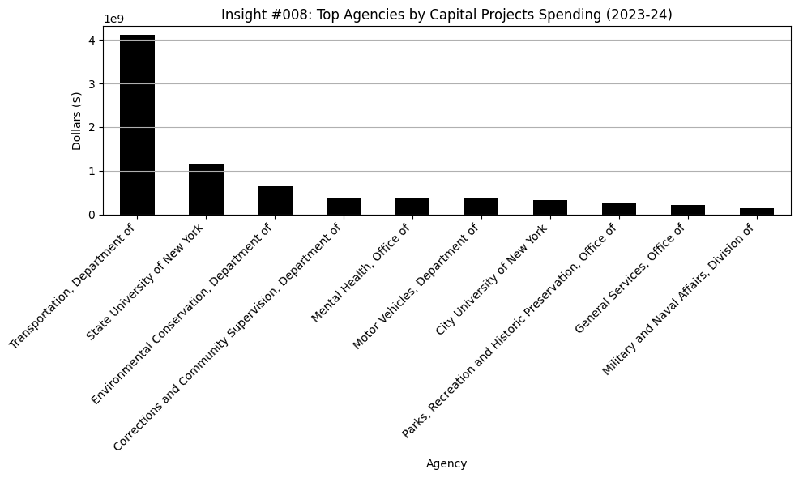 Generated by CivHub AI v0.1Source: NY State Budget Archive | Data: Cleaned CSV
Insight 007 – March 28, 2025
Despite economic turbulence, Health, Education, and Social Services remain the top-funded categories in the NY State Budget, continuing a five-year trend of consistent investment.
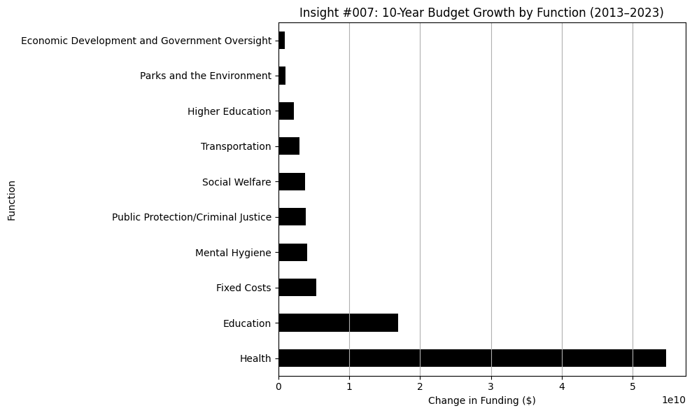 Generated by CivHub AI v0.1Source: NY State Budget | Data: Cleaned CSV
Insight 006 – March 28, 2025
New York's 2024–25 budget includes steep funding cuts to Worker Protection and Public Safety—a shift that may signal a reprioritization of state oversight programs.
 Generated by CivHub AI v0.1
Generated by CivHub AI v0.1Source: NY State Budget | Data: Cleaned CSV
Insight 005 – March 28, 2025
In Westchester County, children under 18 experience the highest poverty rates. Over 11% of youth live below the poverty line—revealing disproportionate vulnerability for the youngest residents.
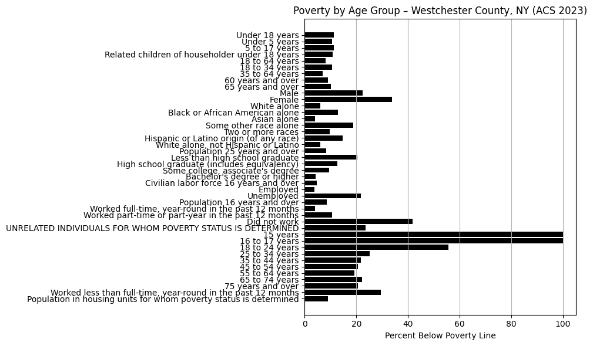 Generated by CivHub AI v0.1Source: U.S. Census Bureau | Data: ACS Poverty CSV
Insight 004 – March 28, 2025
Kings, Queens, and New York counties (Brooklyn, Queens, Manhattan) host the highest number of EPA-registered environmental sites in the state. These include air quality monitors, hazardous waste sites, and other facilities tracked by federal regulators.
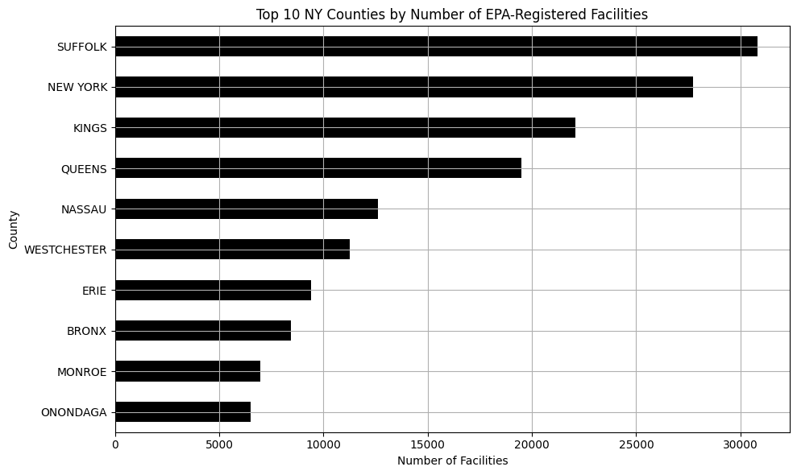 Generated by CivHub AI v0.1Source: EPA Facility Registry Service | Data: EPA NY CSV
Insight 003 – March 27, 2025
The NY State Budget reveals massive single-year funding spikes for Higher Education and Transportation. Some lines jumped from $0 to over $100M—a flagged anomaly in an otherwise steady budget.
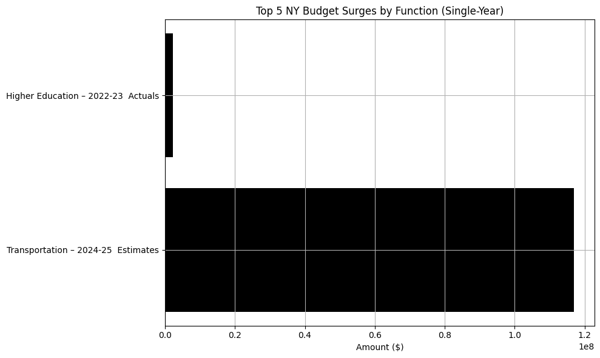 Generated by CivHub AI v0.1Source: NY State Budget | Data: Cleaned CSV
Insight 002 – March 27, 2025
Health, Education, and Social Services have received the highest levels of funding in the NY State Budget for the past five years—despite fluctuations elsewhere, these categories show a long-term trend of prioritization.
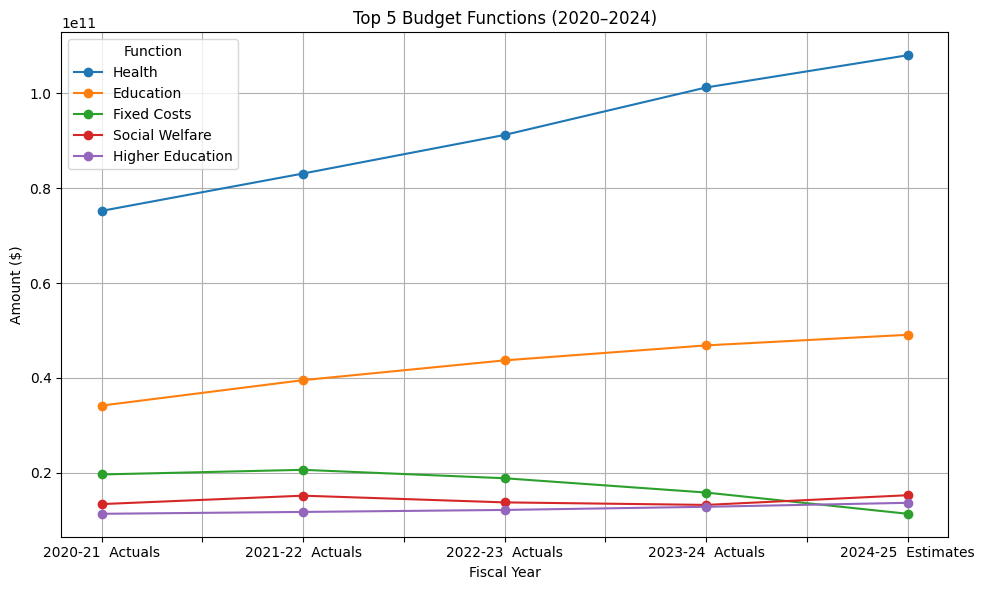 Generated by CivHub AI v0.1Source: NY State Budget | Data: Cleaned CSV
Insight 001 – March 26, 2025
In the 2023–24 NY State Budget, Health saw the largest year-over-year funding increase—up nearly $10 million from the prior year.
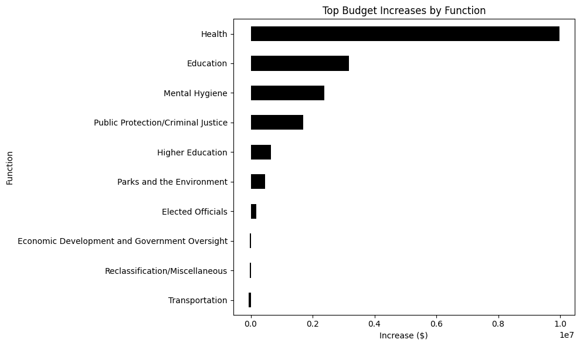 Generated by CivHub AI v0.1Source: NY State Budget | Data: Cleaned CSV